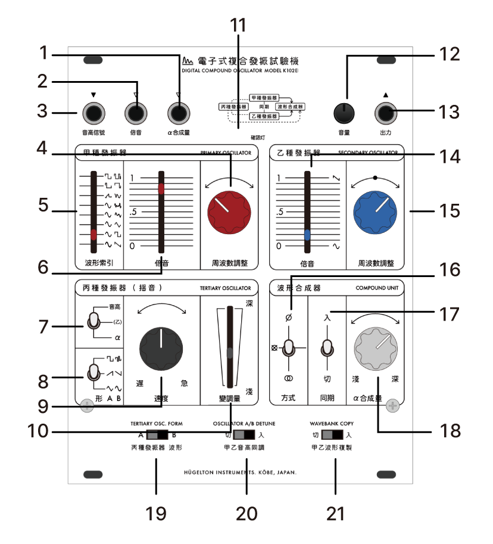

K102E Digital Compound Oscillator
概要
K102E は、独自の「アイランド・シンセシス」理念に基づいて開発された、デジタル複合発振器モジュールです。
主な特徴として、3つの独立した発振器を搭載し、豊かな音色を生成できます。マイクロコンピュータによるDSP処理により、安定した発振と多様なウェーブテーブル合成を実現しています。 2つの主発振器（甲/乙）は、一般的なコンプレックス・オシレータと同様に機能し、以下の特徴があります：
- 3種類の合成方法（位相変調、乗算、クロスフェード）から選択可能
- ハードシンクとデチューン機能を搭載
- 80年代のウェーブテーブルシンセサイザーを踏襲した8種類の波形を搭載し、倍音指定インデックスで読み出し位置を制御
- 低周波から高周波まで任意の周波数を選択可能
- LFOまたはクロスモジュレータとして機能
- オクターブ/ボルト制御による標準的なCV入力
- 倍音（ウェーブテーブル読み出し位置）のCV制御
- 波形合成のアルファパラメータ用CV入力
「アイランド・シンセシス」は、我が国独自の電子音響芸術の伝統を現代に受け継ぎ、さらに発展させようとする思想です。
ブックラとモーグより始まったシンセサイザーの歴史は、発音方式により「西海岸」と「東海岸」という二つの潮流として語られるようになりました。
しかし、同時期の日本には、独自の探求を行う複数の先駆者たちが存在していました。
そもそも1934年日本楽器製造株式会社（現ヤマハ株式会社）が開発したマグナ・オルガンは逓倍・分周回路を用いた「電子楽器」への挑戦でした。
また1960年代より始まるトランジスタの一般化による国産シンセサイザーの開発を持ってしても、ユニークな設計のものが多々ありました。
現代のシンセサイザー市場では、グローバル化の影響により設計思想や音作りの手法が画一化する傾向にあります。
私はかつての日本の電子音響機器が持っていた独創性―その技術的特徴、美意識、そして思想を再評価し、現代の技術で再解釈することを目指しています。
K102Eは、このような「アイランド・シンセシス」のはじめのパーツとして開発された、デジタル複合発振器モジュールです。以下の特徴を備えています：
御案内
本機は當社設立以來、構想より五年、幾度の試作を經て量產に漕ぎ着けし初の音響實驗機に御座います。アイランド・シンセシスと呼ぶ我が國獨自の音響合成方式思想を具現化せし革新的なる裝置として、音響藝術の新たなる可能性を切り拓くものと確信致して居ります。
パネル各部の説明
| No. | 名称 | 機能 |
|---|---|---|
| 1 | 音高 CV 入力 | V/Oct 規格のピッチ制御入力 |
| 2 | 倍音操作入力 | 波形読み出し位置の CV 入力 |
| 3 | α 合成量入力 | 合成パラメータの CV 入力 |
| 4 | プライマリー OSC 周波数 | メイン発振器のピッチ調整 |
| 5 | 波形選択 | ウェーブテーブルの選択 |
| 6 | 倍音調整 | 波形読み出し位置の調整 |
| 7-10 | LFO 設定 | 変調の効果先/形状/速度/深さ |
| 11-12 | 出力レベル | 信号レベルの調整（アッテネータ） |
| 13 | 音声出力 | オーディオ出力（±5V） |
| 14-15 | セカンダリー OSC | 第二発振器の倍音/周波数調整 |
| 16 | 合成方式選択 | PM/RM/Crossfade の切り替え |
| 17 | ハードシンク | プライマリー → セカンダリーの同期 |
| 18 | α 量 | 合成パラメータの手動調整 |
| 19-21 | 特殊機能 | 波形 AB/同調/複製スイッチ |
主要機能
甲種（プライマリー）発振器
- ピッチ調整（±2 オクターブ）
-
8 種類の波形バンクを搭載
- 基本波形（鋸波、矩形波、三角波、正弦波）
- 金属倍音
- フォルマント（声）波形
- 線形フィードバックノイズ
- カオス倍音
- 16 段階の倍音選択機能
- ウェーブテーブル読み出し位置の精密コントロール
乙種（セカンダリー）発振器
- ピッチ調整（甲種に対して ±1 オクターブ）
- 甲種と同様の波形バンク搭載
- ウェーブテーブル読み出し位置コントロール
- 甲種発振器とのハードシンク機能
丙種（LFO）セクション
- レート：0.005Hz から 50Hz
- デプスコントロール
-
4 種類の波形選択
- スクエア
- トライアングル
- ランプ（上昇/下降）
- ランダムステップ
- 複数のモジュレーション・デスティネーション選択
仕様
物理仕様
- パネル幅: 20HP
- 奥行: 20mm
- パネルカラー: ホワイト/ブラック（交換不可）
電気仕様
- 電源: DC ±12V（16 ピン Eurorack 規格）
-
消費電流:
- +12V: 300mA（理論値）
- -12V: 10mA（理論値）
入出力仕様
- アウトプット: 3.5mm モノラルジャック（±5Vpp）
- ピッチ CV 入力: 3.5mm モノラルジャック（V/Oct, 0-5V）
- モジュレーション CV 入力: 3.5mm モノラルジャック（0-5V, Harmonics）
- アルファ CV 入力: 3.5mm モノラルジャック（0-5V, Alpha）
ウェーブテーブルと合成
波形バンク
| 名称 | 説明 | |
|---|---|---|
| 線形フィードバックノイズ | 矩形波に順次フィードバックノイズを加える | |
| パルス幅変調 | 矩形波の幅を変化 = Pulse Width | |
| フォルマント波形 | フォルマントフィルターによる母音の響きを再現 | |
|
|
カオス倍音 | 正弦波よりカオス倍音を加算 |
| 金属倍音 | 正弦波より金属質倍音を加算 | |
| 方形波 | 正弦波より奇数倍音を加算 | |
| 三角波 | 正弦波より奇数倍音を半減衰加算 | |
| ノコギリ波 | 正弦波より整数倍音を加算 |
合成方式
ü Phase Modulation (PM)
- プライマリー波形の位相をセカンダリーで変調
- アルファパラメーターで変調量を制御
- 独特な倍音構造による新しい音色生成
î Multiply Modulation (RM)
- プライマリーとセカンダリーの乗算合成
- アルファパラメーターで原音とリング変調音のバランスを制御
- 新しい倍音列による金属的な音色
Z Cross-fade
- プライマリーからセカンダリーへのスムーズな遷移
- アルファパラメーターでクロスフェード量を制御
- 2 つの波形間の滑らかなモーフィング
接続と基本操作
設置手順
- ユーロラック電源が切断されていることを確認
- バスケーブルの方向を確認
- モジュールを設置し、固定ネジで確実に固定
基本操作
- 初期起動時は出力レベルを最小に設定
- 各発振器のピッチを調整
- 希望する波形を選択
- 合成方式を選択し、アルファパラメーターで調整
- 必要に応じて LFO でモジュレーションを追加
注意事項
- 電源投入/切断時は必ず出力レベルを最小にすること
- CV 入力端子には規定電圧範囲内の信号を入力すること
- 過大入力による損傷を防ぐため、接続は慎重に行うこと
- 適切な通気が確保された環境で使用すること